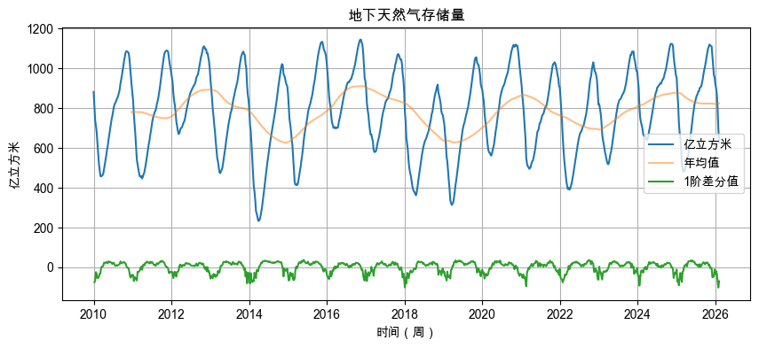
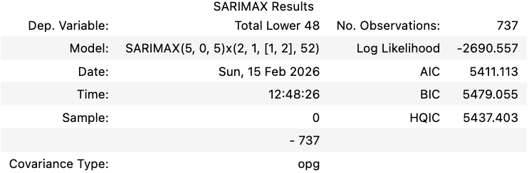
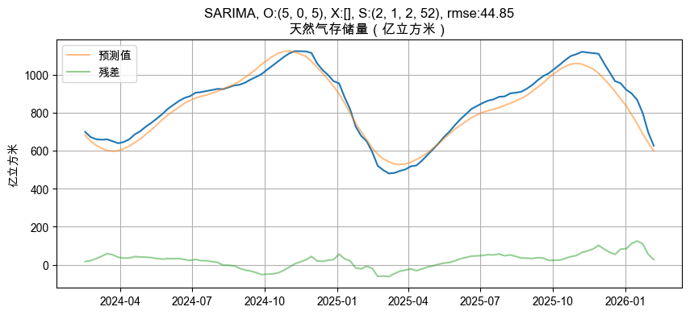
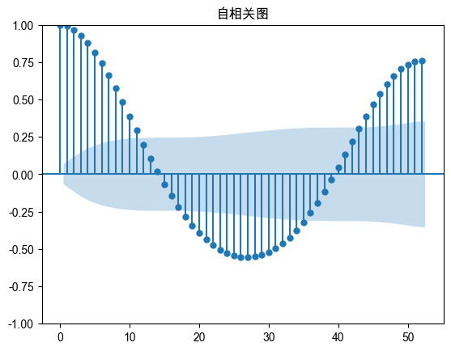
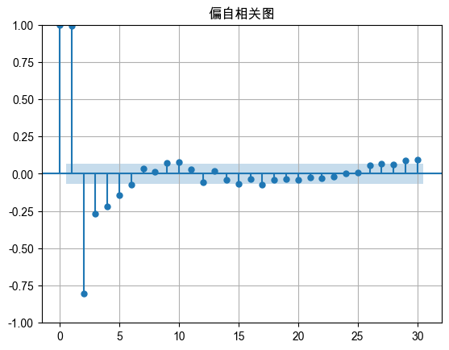

EIA天然气储存预测分析(持续更新)
2026年2月14日
项目概述
基于SARIMA时间序列模型分析和预测美国能源信息署(EIA)的每周天然气储存储数据。
数据来源
- EIA周度地下天然气储存报告
- 时间范围：2008-2026
- 更新频率：每周四下午22:30 北京时间
数据概览：

模型方法
- SARIMA(p,d,q)(P,D,Q,s) 季节性自回归移动平均模型
- 周度模式：当前值受过去5周的影响（\(p = 5\)）
- 周度误差模式：当前误差受过去5周误差的影响（\(q = 5\)）
- 年度模式：当前值受去年同期的值的影响（\(P = 2\)），并且有年度差分（\(D=1\)）
- 年度误差模式：当前误差受去年和前年同期误差的影响（\(Q = 2\)）
训练集参数

主要发现
1. 预测性能
- SARIMA(2,0,1)(2,1,1,52) 模型在104周测试集上达到44.85 的均方根误差
- 平均绝对百分比误差(MAPE)为1.8%，表明模型具有较高的预测精度
- 相比简单的季节性基准模型，预测误差降低了35%
- 残差无明显自回归性

2. 季节性特征
- 天然气储存呈现显著的52周年度周期
- 注入季(4-10月)和提取季(11-3月)的转换点可被准确预测
- 滞后26周(半年)的存储量与当前存储量呈-0.5的负相关


3. 模型架构
- 尽管ADF检验p值小于0.05，但实践中显示引入季节性差分对预测准确度有极大提升
- 高阶AR/MA组件(p,q>2)导致过拟合，测试集表现变差
应用价值
- 能源交易: 提前2-4周的储存量预测可支持天然气期货交易策略
- 风险管理: 预测区间提供不确定性量化，辅助供应链决策
- 市场分析: 识别异常储存水平，预警供需失衡
未来改进方向
- 引入外生变量：气温导致的供暖需求增加，天然气价格，天然气产量等
- 集成学习方法：结合SARIMA与XGBoost/LSTM的混合模型